Alien
Alien
Alien is a modular webshell framework developed for cybersecurity research and education.
It provides a unified architecture for managing multiple types of webshells through modular components such as OneShell, NebulaPulsar, Event Horizon, and DriftingComet.
Disclaimer
This project was developed as part of my personal interest in studying cybersecurity. It is designed for legistimated penetration testing and education purpose only.
However, it may potentially be misused for malicious purposes.
Please do NOT use this tool for any illegal activities.
The author is not responsible for any misuse and damages of this software.
Warning
Your antivirus software may detect and automatically delete certain files (such as webshell source code used for exploitation).
This behavior is expected.
Background
Alien was originally developed during my second year at university as my first webshell management tool. Although the project was functional, its architecture was difficult to maintain and lacked extensibility. As my experience in software engineering and offensive security grew, I decided to archive the original implementation and redesign the project from scratch. However, it had been suspened for some reasons.
After several months of redesign and development, Alien has evolved into a modular framework rather than simply another webshell client.
If you find this project helpful or informative, I would truly appreciate a ⭐ on the repository. Your support would be a great motivation for me to continue improving this tool!
Architecture
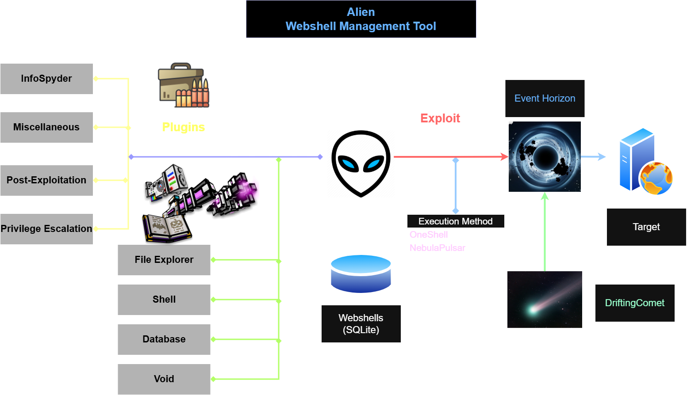
Supported Web Technologies
| Script | Server | Execution Method | Payload Type |
|---|---|---|---|
| PHP | Linux/Windows | v5.X | OneShell |
| v7.X, v8.X | OneShell, ECDH (Elliptic Curve Diffie-Hellman) | ||
| ASP | Windows | Classic | OneShell |
| ASPX, ASHX, ASMX | Windows | JScript | OneShell |
| Linux/Windows | NebulaPulsar | DarkMatter | |
| JSP | Linux/Windows | Nashorn | OneShell |
| NebulaPulsar | DarkMatter | ||
| JSPX | Linux/Windows | Nashorn | OneShell |
| NebulaPulsar | DarkMatter | ||
| CFML | Linux/Windows | NebulaPulsar | DarkMatter |
| Perl | Linux/Windows | CGI | OneShell |
| Ruby | Linux/Windows | CGI | OneShell |
Features
Alien includes many functionalities, like a remote access tool:
File Manager
The features below are provided:
- Image: Display selected image files.
- Edit: Edit text or binary files using the built-in text editor or hex editor.
- Copy: Copy selected files and directories to the clipboard.
- Move: Move selected files and directories.
- Paste: Copy or move all files from clipboard. If the
Moveflag is true, all the files in clipboard will be removed. - Rename: Rename a file or directory.
- Delete: Delete selected files and directories.
- Upload: Upload file to current directory.
- Download: Download files from remote server to
./Victim/[Server Domain]/Downloads. - WGET: Download files from another server to the remote server.
- Datetime: Modify the
LastModifiedandLastAccessedtimestamp. - New: Create a new text file or a folder.
- Find: Search files under specified directories, supporting Regex.
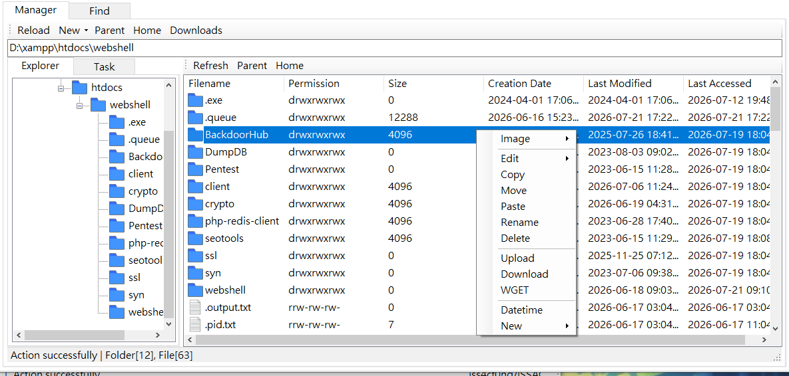
Virtual Shell
This includes the features below:
- Exec Shell: Execute a single command and display the output, this feature does not support interactive shell such as ssh or nslookup.
- Virtual Shell: Execute command in a virtual shell interface, this feature does not support interactive shell such as ssh or nslookup.
- Piped & PTY: This interface provides a piped shell for Windows server or PTY shell for Linux. This feature supports interactive shell such as nslookup, vi, vim, ssh. However, if the webshell is ASP, ASP.NET, it requires a
worker.ps1PowerShell script
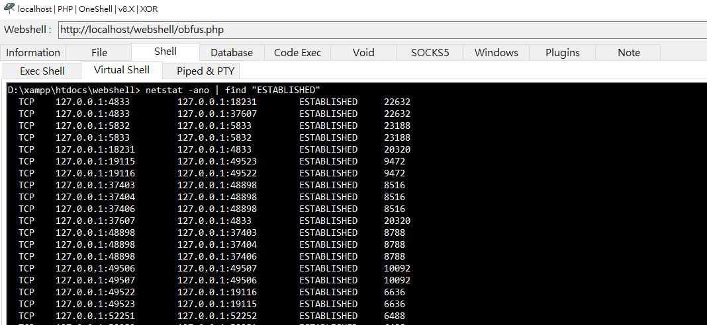
Database
This panel allows the user managing databases.
Supported databases:
- MySQL: Supported through PHP 5.x, PHP 7.x and PHP 8.x (MariaDB).
- Access DB: Usually used by ASP
- PostgreSQL
- SQL Server: Usually used by ASP.NET
- Oracle: Usually used by Java
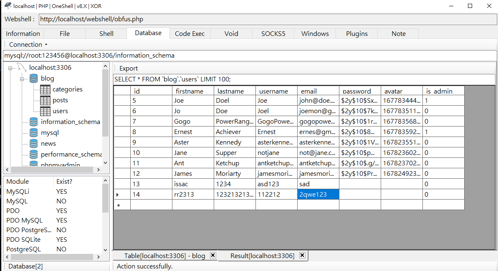
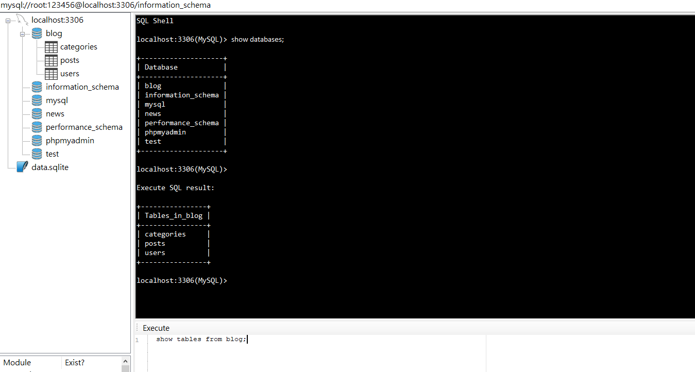
Code Exec
Execute arbitrary code directly or send custom HTTP POST requests for testing and debugging purposes.
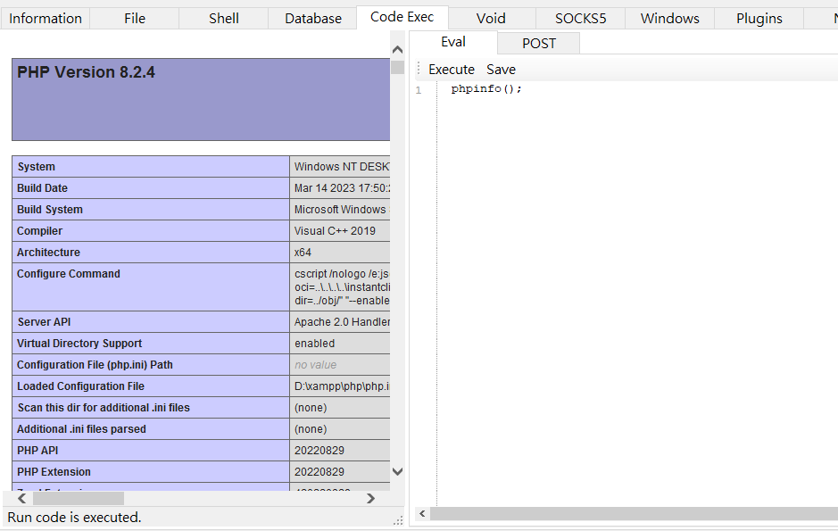
Void
Void provides several network-oriented post-exploitation utilities, including TCP-based LAN scanning.
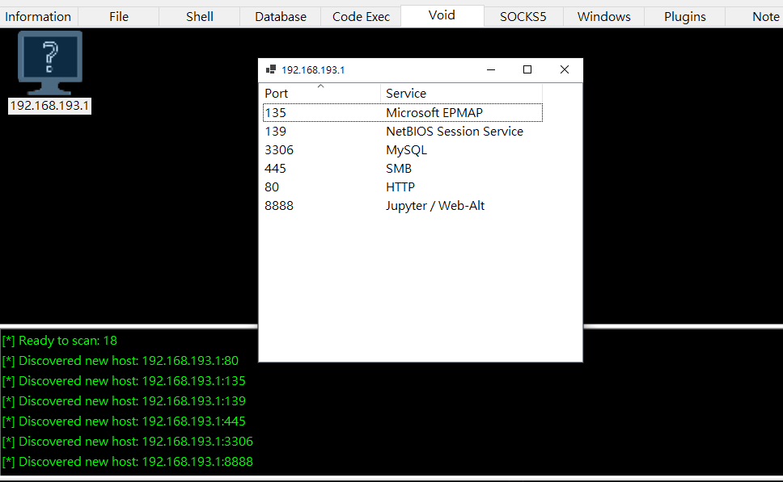
SOCKS5
Expose a local SOCKS5 proxy through the compromised server, allowing access to internal network resources.
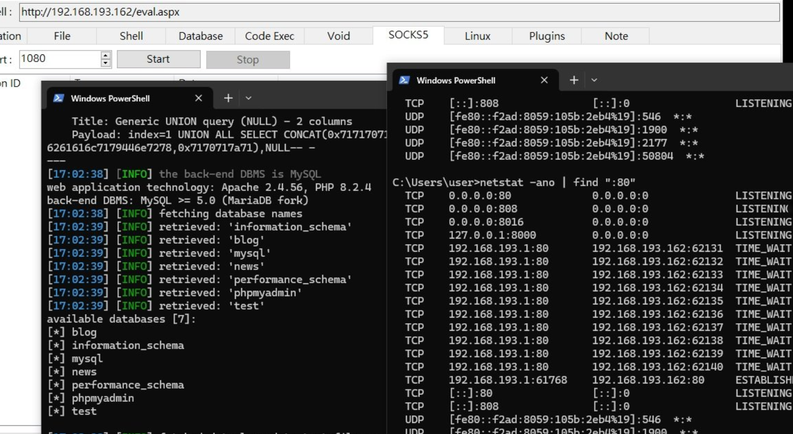
Linux/Windows
Provide features for Unix-like or Windows servers.
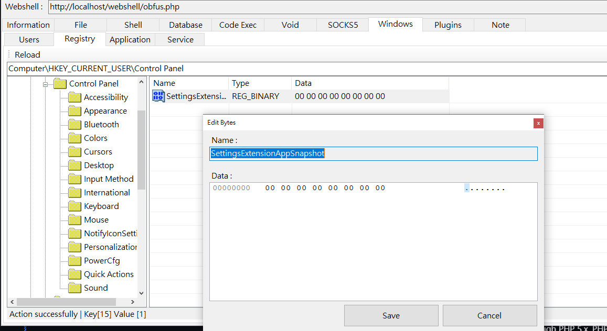
Plugins
Plugins are dynamically loaded and can be developed independently from the core framework.
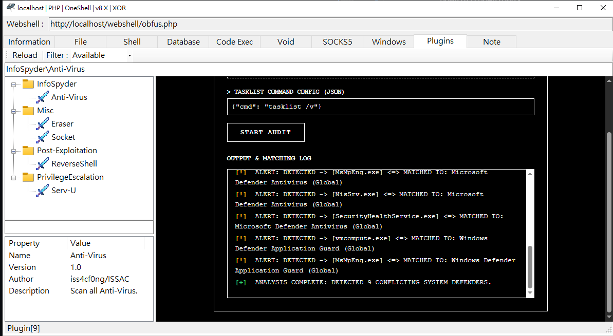
Note
You can write anything in this page.
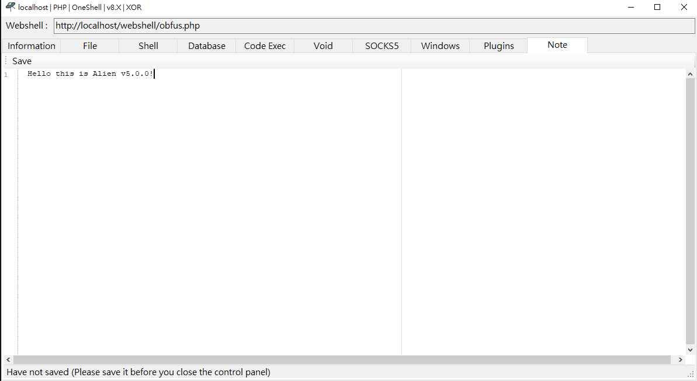
Event Horizon
Event Horizon is Alien’s traffic obfuscation framework.
It supports custom tamper scripts, bilateral HTTP traffic obfuscation, payload builders, and wrapper injection for improving flexibility and evasion.
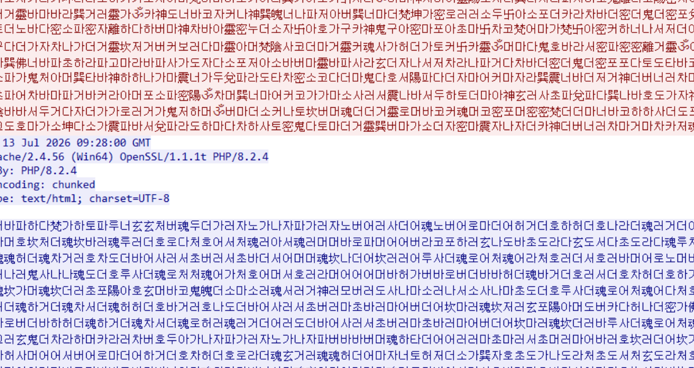
DriftingComet
DriftingComet is Alien’s webshell pivoting mechanism.
It allows traffic to be relayed through compromised web servers, enabling access to otherwise unreachable internal targets.
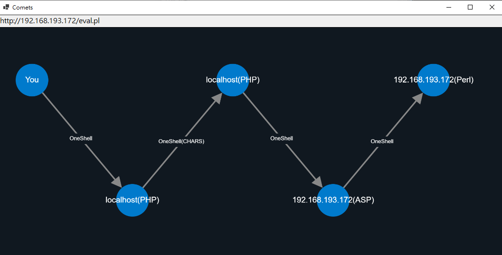